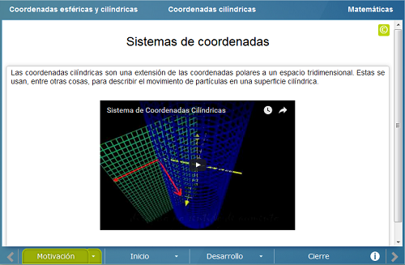
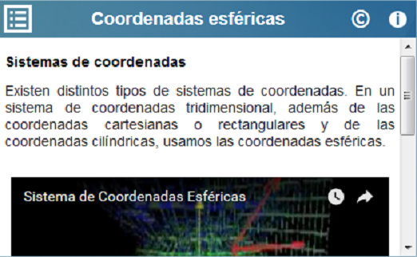
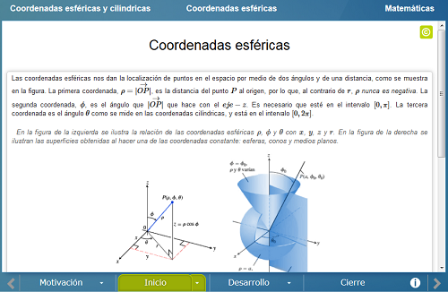
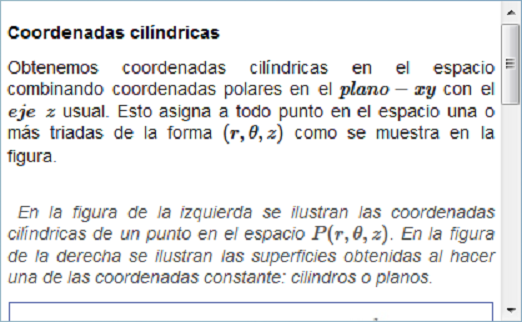
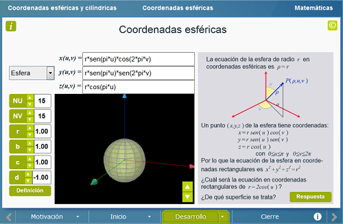
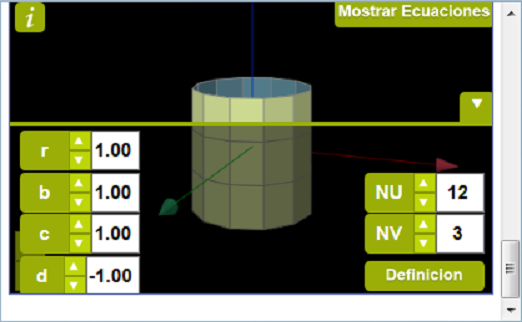
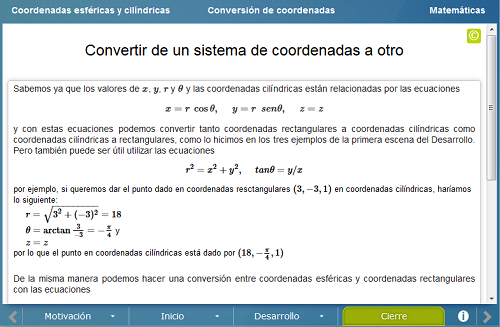
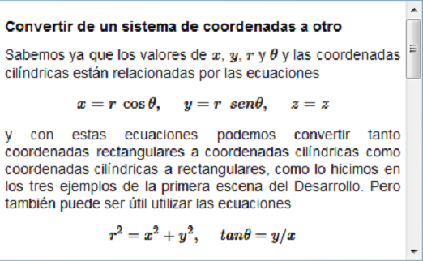

Coordenadas Esféricas y Cilíndricas
Coordenadas Esféricas y Cilíndricas
 Coordenadas Esféricas y Cilíndricas
Coordenadas Esféricas y Cilíndricas
Que el alumno conozca los sistemas de coordenadas cilíndricas y esféricas, que visualice la gráfica de la ecuación de algunas superficies dadas en estos sistemas de coordenadas en un espacio tridimensional y la manipule.
Se muestra un video de una animación de la superficie que se genera al hacer cada coordenada cilíndrica constante. Así mismo se muestra un video para las coordenadas esféricas.


Se definen las cilíndricas y las coordenadas esféricas.


Se muestran algunos ejemplos de superficies cuyas ecuaciones están dadas en coordenadas rectangulares o cilíndricas. El usuario podrá alterar las ecuaciones agregando algunos parámetros y visualizar su gráfica.


Se hace una síntesis de la unidad agregando las ecuaciones de las coordenadas dadas en un sistema u otro.


| Diseño del contenido | Brenda Casandra Vargas Rocha (Instituto de Ciencia e Ingeniería de Materiales, UNAM) |
| Diseño funcional | Brenda Casandra Vargas Rocha (Instituto de Ciencia e Ingeniería de Materiales, UNAM) |
| Programación | Brenda Casandra Vargas Rocha (Instituto de Ciencia e Ingeniería de Materiales, UNAM) |
| Asesoría de programación |
José Luis Abreu León (Instituto de Matemáticas, UNAM) Leticia Montserrat Vargas Rocha |
| Diseño gráfico | Ricardo López Gómez |
| Coordinación | Leticia Montserrat Vargas Rocha |
| Diseño funcional | Elsa Sirenia Vega Camacho |
| Programación | Elsa Sirenia Vega Camacho |
| Asesoría de programación | Leticia Montserrat Vargas Rocha |
| Diseño gráfico | Francisco Varela Fuentes |
| Ilustración | Francisco Varela Fuentes |
| Coordinación | Leticia Montserrat Vargas Rocha |
| Desarrollo del contenedor | Oscar Escamilla González |
Los contenidos de esta unidad didáctica interactiva están bajo una licencia Creative Commons Reconocimiento-NoComercial-CompartirIgual.
La unidad didáctica fue creada con Arquímedes, una herramienta de código abierto.
La unidad didáctica contiene escenas elaboradas con Descartes, una herramienta de código abierto.
LITE - UnADM 2014